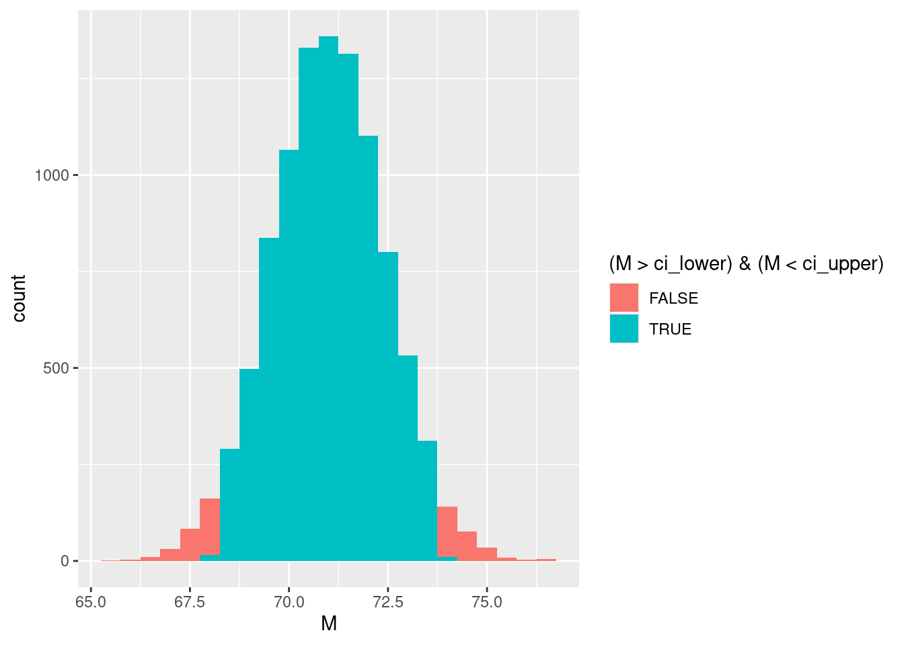
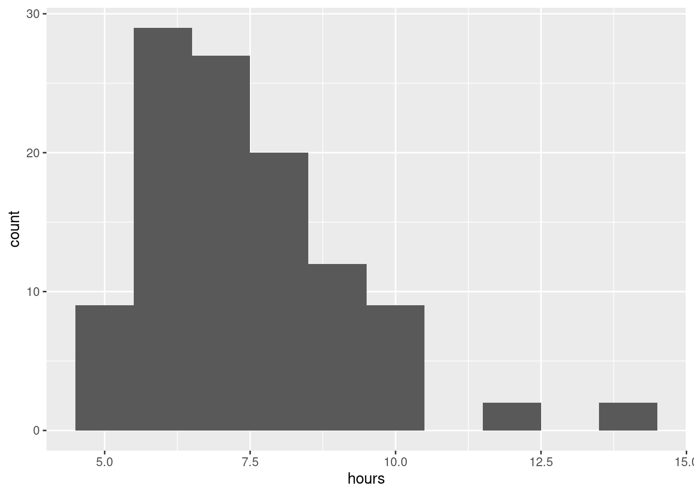

Lab 7 Confidence intervals and hypothesis testing
As we’ve seen, one of the remarkable fruits of the “central limit theorem” is the confidence interval. This interval tells us where sample means are likely to be, assuming
- Samples are selected from the population using simple random sampling; and
- That we either know or hypothesize the parameters of the population we are sampling from.
We explored the consequences of sampling last time. Today, we will see more about how to find confidence intervals in R and use them to test hypotheses. Specifically, we will use confidence intervals to test “null” hypotheses. As we’ve seen, there are four basic steps to testing a hypothesis using a confidence interval.
- Figure out what parameters would describe the population if the hypothesis were true.
- Decide how wide to make our confidence interval.
- Figure out the upper and lower boundaries of the confidence interval.
- Compare our sample to the confidence interval and, if it is outside the interval, reject our original hypothesis.
In the first part of the session, we will do hypothesis tests with simulated data where we know whether the null hypothesis is true or not. In the second part of the session, we will do a hypothesis test on real data and see what we can learn about the population from which it was sampled.
Before we begin, make sure you’ve got the “tidyverse” package loaded from R’s library.
library(tidyverse)## ── Attaching packages ─────────────────────────────────────── tidyverse 1.3.0 ──## ✓ ggplot2 3.3.3 ✓ purrr 0.3.4
## ✓ tibble 3.0.5 ✓ dplyr 1.0.3
## ✓ tidyr 1.1.2 ✓ stringr 1.4.0
## ✓ readr 1.4.0 ✓ forcats 0.5.0## ── Conflicts ────────────────────────────────────────── tidyverse_conflicts() ──
## x dplyr::filter() masks stats::filter()
## x dplyr::lag() masks stats::lag()7.1 Be still, my (artificial) heart
The resting heart rate within the typical US adult population has a mean of \(\mu = 71\) beats-per-minute with a standard deviation of \(\sigma = 9\) beats-per-minute. We all know that sudden excitement or shock tends to increase our heart rate, but interestingly, the effect of chronic stress on heart rate is not well established. There is evidence for both a higher resting heart rate due to sustained minor stress, as well as a lower resting heart rate due to frequent major stressful life events. In any case, it is clear that detecting abnormal heart rate can be important not just for physiological health, but psychological health as well.
In this part of the session, we will simulate different samples of individuals with different resting heart rates and test the hypothesis that these individuals come from a population with the same heart rate parameters as the typical US adult population. We will follow the steps above to construct a confidence interval (steps 1–3), then compare our simulated sample against it (step 4).
7.1.1 Constructing confidence intervals
Before we can even get to step 1, we need to be clear what our hypothesis is that we are testing. Our research hypothesis is that the sample of individuals comes from a population with a different mean heart rate than the typical US adult. The statistical hypothesis that we are testing is the null hypothesis.
The null hypothesis is that our sample comes from a population with the same mean heart rate as the typical US adult population, with \(\mu = 71\).
If we can reject this null hypothesis, then we have reason to believe that our sample is meaningfully different from the typical population and we say it is statistically significant.
7.1.1.1 Figure out what parameters would describe the population if the hypothesis were true
From the description above, we know the population mean (\(\mu = 71\)) and standard deviation (\(\sigma = 9\)). Let us assume that our sample size is \(n = 40\), which is typical for this kind of research. The central limit theorem tells us that our sample means will, then, have a normal distribution with mean \(\mu = 71\) and standard error of the mean \(\frac{\sigma}{\sqrt{n}} = \frac{9}{\sqrt{40}}\). We can use R to calculate what the standard error is.
## [1] 1.4230257.1.1.2 Decide how wide to make our confidence interval
Our confidence interval is defined by how unlikely a sample has to be before we are willing to reject the null hypothesis. A standard rule is to say that if a result has probability \(0.05\) or less if the null hypothesis were true, then we can reject the null hypothesis. This standard rule corresponds to a “95% confidence interval,” where the “95%” refers to \(1 - 0.05 = 0.95\), which is the probability that we will fail to reject the null hypothesis when it is true.
Let us adopt the standard rule for now and use the 95% confidence interval.
7.1.1.3 Figure out the upper and lower boundaries of the confidence interval
To find the upper and lower boundaries of the confidence interval, we have to divide the \(0.05\) probability of being outside the interval between the upper and lower ends of the scale. This means that there is a probability of \(\frac{0.05}{2} = 0.025\) of being less than the lower boundary and a probability of \(0.025 + 0.95 = 0.975\) of being less than the upper boundary.
The lower boundary of the 95% confidence interval is then
qnorm(p = 0.025, mean = 71, sd = 9 / sqrt(40))## [1] 68.21092while the upper boundary is
qnorm(p = 0.975, mean = 71, sd = 9 / sqrt(40))## [1] 73.789087.1.1.4 Visualization
The logic of hypothesis testing can be easier to understand if we visualize the distribution of sample means and the 95% confidence interval. To do that, we will first use the normal distribution to simulate different sample means, then make a colored histogram of those sample means that distinguishes between ones that are inside the confidence interval and ones that are outside the confidence interval.
First, let’s simulate a large number of means of possible samples of size \(n = 40\) that we might observe if the null hypothesis were true.
M <- rnorm(n = 10000, mean = 71, sd = 9 / sqrt(40))Now let’s turn those into “data” so we can use R to make a histogram of these simulated sample means.
sample_means_size40 <- tibble(M)And finally make the histogram
sample_means_size40 %>%
ggplot(aes(x = M)) +
geom_histogram(binwidth=0.5)
Now we need to color in this histogram depending on whether the sample mean is inside or outside the confidence interval. To do that, let’s tell R to remember the upper and lower boundaries we found earlier
ci_lower <- qnorm(p = 0.025, mean = 71, sd = 9 / sqrt(40))
ci_upper <- qnorm(p = 0.975, mean = 71, sd = 9 / sqrt(40))That makes it easier to fill the bars with different colors:
sample_means_size40 %>%
ggplot(aes(x = M, fill = (M > ci_lower) & (M < ci_upper))) +
geom_histogram(binwidth=0.5)7.1.2 Compare our sample to the confidence interval
In this part of our session, we will simulate different samples and compare them to the confidence interval we just found. We will see how different our sample needs to be from the typical population before we consistently reject the null hypothesis.
7.1.2.1 When the null hypothesis is true
First, let’s imagine that the sample of individuals we get actually does come from a population with the same mean heart rate as typical US adults, i.e. with \(\mu = 71\). We will tell R to remember our sample under the label “heart_rate_sample.”
heart_rate_sample <- rnorm(n = 40, mean = 71, sd = 9)mean(heart_rate_sample)## [1] 70.02283Is the sample mean outside the confidence interval, which would lead us to reject the null hypothesis, even though it is actually true?
7.1.2.2 When the null hypothesis is false
Now let’s imagine that the sample we get comes from a population that has a higher resting heart rate, on average, than the typical US adult population. Will we correctly reject the null hypothesis?
Let’s say that the mean heart rate in this different population is 74.
heart_rate_sample <- rnorm(n = 40, mean = 74, sd = 9)How does the mean of this sample compare to the confidence interval we found above?
mean(heart_rate_sample)## [1] 74.828697.2 Lay your weary head to rest
Having tested hypotheses using simulated resting heart rate data, let’s see about testing a hypothesis using some real data. These data have to do with a different kind of rest, sleep. These are the number of hours slept in a particular night for a simple random sample of \(n = 110\) US college students. We will use hypothesis testing with confidence intervals to infer whether college students tend to sleep the recommended amount per night.
First, let’s make sure to download the data to get it into R
student_sleep <- read_csv("https://raw.githubusercontent.com/gregcox7/StatLabs/main/data/student_sleep.csv")##
## ── Column specification ────────────────────────────────────────────────────────
## cols(
## hours = col_double()
## )If you click on the “student_sleep” data in R’s environment pane in the upper right, you’ll see that it is just a single column called “hours,” where each row in the number of hours slept by a different student.
Let’s also make a histogram to get a sense of what the data look like.
student_sleep %>%
ggplot(aes(x = hours)) +
geom_histogram(binwidth = 1)
7.2.1 Figure out what parameters would describe the population if the hypothesis were true
Our research hypothesis is that college students do not sleep the recommended amount per night. According to the National Sleep Foundation, the recommended distribution of sleep for young adults has a mean of \(\mu = 8\) hours and a standard deviation of \(\sigma = 1\) hour. As a result, the null hypothesis that we are going to test is that the mean number of hours slept by college students is equal to the recommended population mean of \(\mu = 8\).
Notice that we are again using a “hypothetical” population to specify our null hypothesis. This hypothetical population is college students who sleep the recommended amount per night. We are going to see if our sample could plausibly have come from such a population.
7.2.2 Decide how wide to make our confidence interval
Again, we have a choice to make here about how willing we are to make a “Type I error,” that is, to reject the null hypothesis even when it is true. For the sake of argument, let’s say that we want to be very conservative and will try to minimize our risk of making a Type I error. So instead of a 95% confidence interval, let’s make a 99% confidence interval. This means that the probability of making a Type I error is only \(0.01\).
7.2.3 Figure out the upper and lower boundaries of the confidence interval
We now have all the ingredients we need to make a confidence interval. We have the population mean (\(\mu = 8\)), population standard deviation (\(\sigma = 1\)), sample size (\(n = 110\)), and confidence interval width (99%).
The lower bound of our confidence interval is then
## [1] 7.754404while the upper boundary is
## [1] 8.2455967.2.4 Compare our sample to the confidence interval
Finally, let’s find our sample mean and compare it to the confidence interval to decide whether or not to reject our null hypothesis:
student_sleep %>%
summarize(M = mean(hours))## # A tibble: 1 x 1
## M
## <dbl>
## 1 7.42That is definitely outside the bounds of our 99% confidence interval! As a result, we reject the hypothesis that the mean number of hours slept by the population of college students is equal to the recommended amount of \(\mu = 8\) hours.
7.3 Wrap-up
In this session, we saw how we can use R to find confidence intervals and how we can use those intervals to test null hypotheses. We saw how hypothesis tests are not perfect—they can lead us to reject the null hypothesis even if it is true (Type I error) and they don’t always lead us to reject the null hypothesis even when it is false (Type II error). Even so, hypothesis tests can be a powerful way to learn about the world using data.